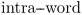
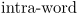
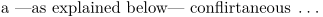
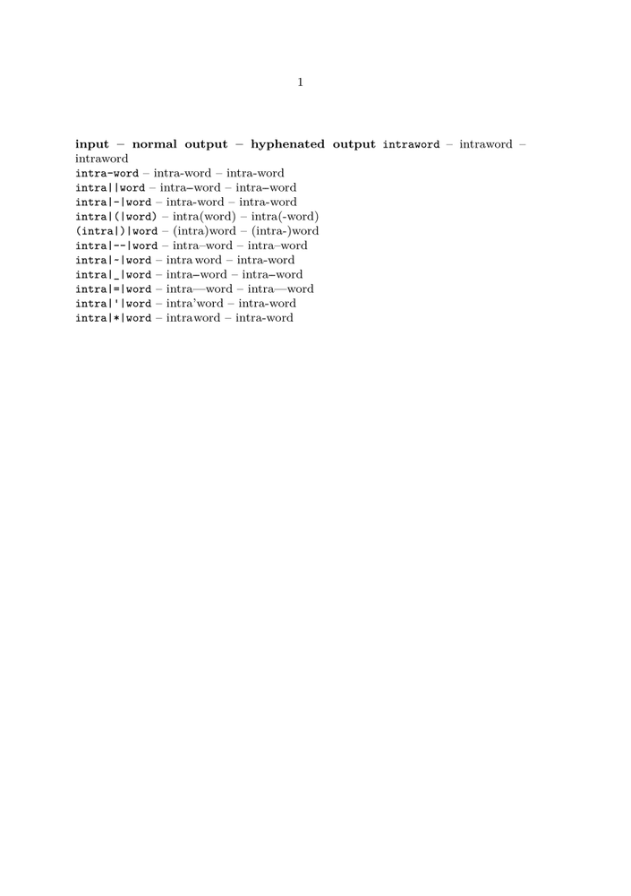
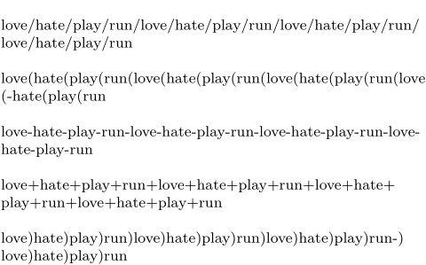

- This article is about words that are spelled with a hyphen. For hyphenated words, see Hyphenation .
Words consisting of two separate words are often separated by an intra word dash, as in x-axis. This dash can be placed between two | characters, for example |-|.
When || is typed, the default intra word dash is used, which is
. You can configure this with \setuphyphenmark.
Valid values are normal and wide.
The default sign is a combination of two hyphens:
-
\setuppapersize[A5] \setuphyphenmark[sign=wide] intra||word
- 
To get a normal sign you could set this with the normal value (ConTeXt 2008.09.16 or later).
-
\setuppapersize[A5] \setuphyphenmark[sign=normal] intra||word
- 
The || is also used in word combinations like (intra)word, which is typed as (intra|)|word. The mechanism is not foolproof but it serves most purposes. In case the hyphenation is incorrect you can hyphenate the first word of the composed one by hand: (in\-tra|)|word.
Another use of || is the processing of subsentences. The symbol that surrounds a subsentence varies depending on the current language settings, as controlled by \setuplanguage. When you use |<| and |>| to indicate the subsentence, the proper symbol will be used automatically.
-
\setuppapersize[A5] a |<|as explained below|>| conflirtaneous \unknown
- 
The main reason behind this mechanism is that TeX doesn’t really know how to hyphenate composed words and how to handle subsentences. TeX know a lot about math, but far less about normal texts. Using this command not only serves consistency, but also makes sure that TeX can break compound words at the right places. It also keeps boundary characters at the right place when a breakpoint is inserted.
The table below is an extended version of the table in the "big manual". In the third column, you see what the possible line breaks in the word would be, and the output that would come from that.
-
\setuppapersize[A5] \def\ShowComposed#1% {\type{#1} -- #1 -- \hyphenatedword{#1}} \starttext \hyphenation{intraword} \hyphenation{intra} {\bf input -- normal output -- hyphenated output} \ShowComposed{intraword} \crlf \ShowComposed{intra-word} \crlf \ShowComposed{intra||word} \crlf \ShowComposed{intra|-|word} \crlf \ShowComposed{intra|(|word)} \crlf \ShowComposed{(intra|)|word} \crlf \ShowComposed{intra|--|word} \crlf \ShowComposed{intra|~|word} \crlf \ShowComposed{intra|_|word} \crlf \ShowComposed{intra|=|word} \crlf \ShowComposed{intra|'|word} \crlf \ShowComposed{intra|*|word} \crlf \stoptext
- 
Enabling hyphenation on hyphens for composed words globally
This is possible in MkIV with the command \setbreakpoints[compound].
This is equivalent to typing each composed-word as composed|-|word. It also sets the characters '+', '/', '(', and ')' as good breakpoints inside composed words. The slash must be typed verbatim, though, not as \slash or \backslash.
-
% mode=mkiv % mkiv only \setuppapersize[A6] \setbreakpoints[compound] \setupwhitespace[line] love/hate/play/run/love/hate/play/run/love/hate/play/run/love/hate/play/run love(hate(play(run(love(hate(play(run(love(hate(play(run(love(hate(play(run love-hate-play-run-love-hate-play-run-love-hate-play-run-love-hate-play-run love+hate+play+run+love+hate+play+run+love+hate+play+run+love+hate+play+run love)hate)play)run)love)hate)play)run)love)hate)play)run)love)hate)play)run
- 